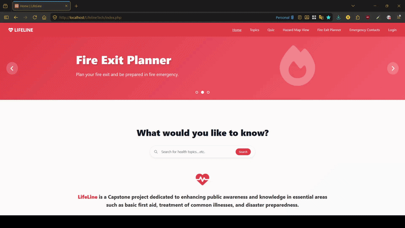

Group Capstone · New Era University · 2025 – 2026
LifeLine
A disaster preparedness web platform with interactive hazard mapping
// walkthrough

About
LifeLine started as an ambitious all-in-one emergency platform covering first aid guides, common illness treatment, and disaster preparedness. As scope was refined through the capstone process, our team focused on what mattered most: disaster preparedness done right.
The platform features structured lessons on disaster preparedness alongside an interactive map layered with fault lines, flood risk zones, evacuation centers, and hospitals. It's built to be a practical reference before, during, and after emergencies.
My Role
I primarily handled the front end: coding the pages and designing the UI/UX in HTML, CSS, JavaScript, and PHP. A groupmate built the PHP and MySQL backend.
What Didn't Make It & Why
// dropped feature
Fire Exit Planner
An attempted feature that aimed to generate personalized fire escape plans for buildings.
It was cut after the capstone defense surfaced how many variables a truly correct fire exit plan
requires. Structural layout, occupant count, accessibility needs, real-time conditions, etc.
It became clear this was still a deeply human job. The feature was dropped rather than shipped half-baked.
Features
-
Disaster Preparedness Lessons
Structured, readable guides on how to prepare for and respond to common Philippine disaster types.
-
Interactive Hazard Map
Layered map showing fault lines, flood risk zones, evacuation centers, and hospitals.
-
Evac Center & Hospital Locator
Quickly locate nearby emergency facilities directly on the map.
Status
We developed LifeLine on XAMPP and hosted it on InfinityFree for the defense. The walkthrough above shows the working platform.